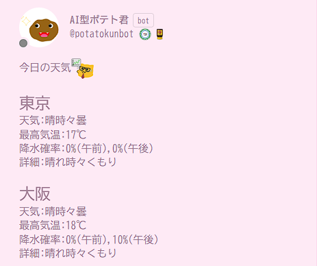

AIポテト君
作品紹介
SNS「Misskey」上において、ユーザを楽しませるジョークAIとして開発しました。
投稿を自動作成して投稿する機能、Misskeyの機能を使ってオセロをする機能、占いを生成して投稿する機能など様々な遊び心のある機能を実装しています。
また、天気予報といった便利な機能も実装しました。
工夫点・技術的特徴
支離滅裂感のある面白い投稿を作ってもらうため、高機能なAIは使っていません。
投稿の生成には主にマルコフ連鎖を使っています。そのために、APIでMisskey上の投稿を取得し、自然言語処理で単語を分解するなどの処理も行っています。
リクエストに応じて、そのユーザの投稿を分析してワードクラウドを作るようなこともできます。
汎用化してAIPC(AIPotatokunController)と名付け、OSSとしてGitHubに公開もしました。
オセロAIはゲームアルゴリズムの知識を使いアルファベータ法で実装しました。
現在のAIポテト君はSNSの管理者の許可を得てSNS管理者が所有するサーバ上で動作しています。その際にLinuxの操作やDockerの使用方法なども学びました。
APIの使用や、自然言語処理、ゲームアルゴリズムなど新しい技術が多く身についた作品です。
作品リンク
GitHubソース(AIPC)AIポテト君のSNSリンク